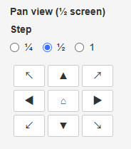
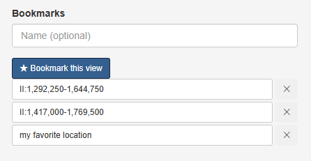
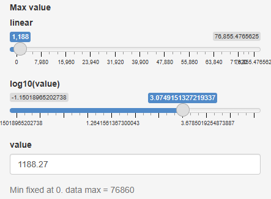
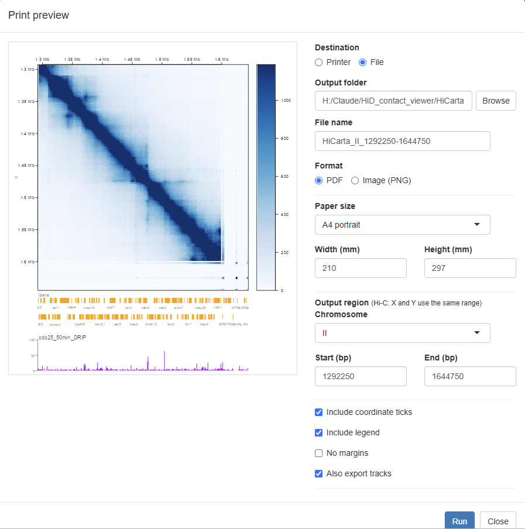

Usage¶
A shortest-path operation guide you can browse by "what you want to do". For what the finer options mean, see Screens & controls, linked from each item.
To start with, the overall flow is all you need to remember: load data → open the map → move around to view it. That's it.
Loading data¶
Data is loaded from the loader that opens when you click the Data button at the top of the screen (three tabs: "Hi-C", "Tracks" and "Session").
Load a Hi-C map¶
- Click the Data button at the top.
- On the Hi-C tab, click Load menu and choose a sample and dataset, or enter the path of a
.hicfile on your computer in local .hic file (Browse… also works). - Click Open map.
→ Details: Screens & controls - Data
Load a bigWig¶
- Open a Hi-C map first (tracks are drawn on the map's coordinates).
- Open the Data button → Tracks tab.
- Enter the bigWig path or URL in bigWig/BED file/URL (Browse… also works).
- Set Type to "bigWig" and click Add track.
→ Details: Screens & controls - Tracks
Load Border Strength¶
- Open a Hi-C map first.
- Open the Data button → Tracks tab.
- Enter the path or URL of the Border Strength file (
*_BS.txt) in the file field. - Set Type to "Border Strength" and click Add track.
Positive values are drawn in red, negative values in blue, and boundaries are marked with dashed lines. For the file format, see Data formats.
→ Details: Screens & controls - Tracks
Load genes / BED¶
On the Tracks tab, enter a path or URL in the file field, set Type to "gene (GFF3)" or "BED", and click Add track. If an IGV XML or track list is available, you can also add tracks via Load at the top, choosing XML file → Category → Track.
→ Details: Screens & controls - Tracks
Moving around the region shown¶
Navigation controls are gathered in the Navigate menu on the left of the screen.
Move to any location¶
- Choose Navigate in the top menu.
- Choose a Chromosome, and enter the range you want in Y-axis start and Y-axis end (bp).
- Click Go to region.
→ Details: Screens & controls - Navigate
Move with buttons¶
Use the direction pad in the Navigate menu (up/down/left/right plus diagonals) to move the map. The step per click is set with Step (¼ · ½ · 1 screen). You can also drag directly on the map, or scroll to zoom.

→ Details: Screens & controls - Navigate
Show the whole chromosome¶
Click the button in the center of the direction pad (⌂) in the Navigate menu to return to the whole-chromosome view.
→ Details: Screens & controls - Navigate
Bookmark a region of interest¶
- Display the region you want to bookmark.
- If you like, enter a name in the name field at the bottom of the Navigate menu (optional).
- Click ★ Bookmark this view.
Saved bookmarks appear in a list; click one to return to that view at any time. Remove one you no longer need with Delete.

→ Details: Screens & controls - Navigate
Adjusting the appearance¶
Change the contrast (color intensity)¶
Choose Display in the top menu and drag the Max value slider to change the contrast. Switching between linear / log10 and choosing a Palette are also done here.

→ Details: Screens & controls - Display
Adjust map height and layout¶
In Setting in the top menu, you can set the Contact map height, spread it full-screen with Fit to window, and adjust track heights and resolution.
→ Details: Screens & controls - Setting
Saving and exporting¶
Save the view and reproduce it later (session)¶
To save:
- Open the Data button → Session tab.
- Click Save current view to download a
.jsonfile.
To restore:
- Open the Data button → Session tab.
- In Restore from file (.json), choose the
.jsonyou saved.
The data source, region, color scale and all tracks are restored together.
→ Details: Screens & controls - Data (Session)
Export as an image / print¶
- Open the map you want to export.
- Choose Print in the top menu and click Open print preview.
- In the preview, set the destination (Printer / File), format (PNG / PDF), paper size, output region, whether to include coordinate ticks, the legend and margins, and whether to include tracks.
- Click Run.

→ Details: Screens & controls - Print
Other¶
Switch the display language¶
Open Setting → Edit config file… in the top menu, choose the Interface language, and click Apply & save. The page reloads and the language switches. Because any open map and tracks are closed when this happens, use the session save feature if you want to return to the same state.
→ Details: Screens & controls - Setting